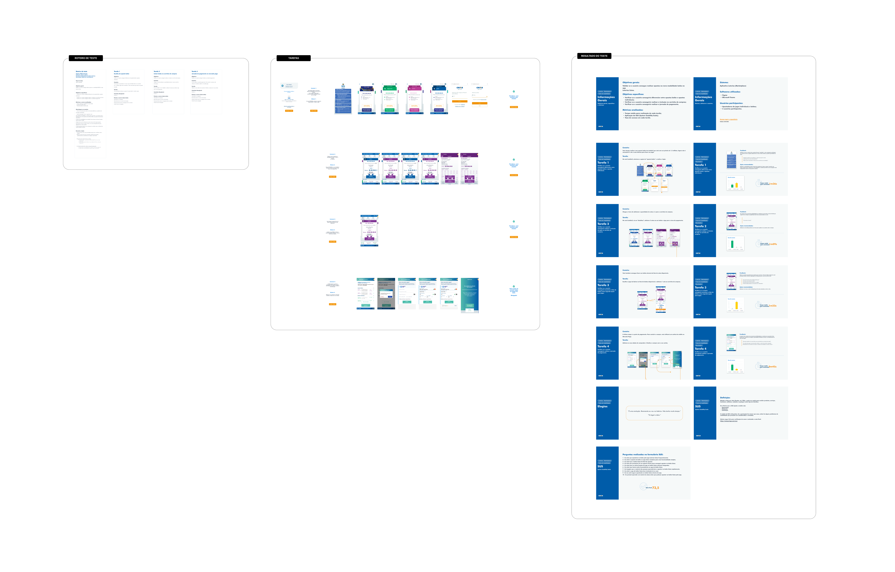

Start
We started with a detailed onboarding with the Product Owners (POs). This phase was crucial to absorb the product vision, understand the business objectives behind the physical-digital integration of lottery pools, define the initial scope, and align expectations regarding the project's challenges and opportunities.
Project
Our research showed a way to make buying lottery pools more practical: connecting the ease of the internet with the many existing lottery retailers. With the new solution, the bettor uses their location to view pools on sale at lottery retailers in their neighborhood, making the purchase faster and more accessible.
Context
We conducted an in-depth benchmark analysis, investigating similar solutions in the national and international market. We used images and interface flows from competitors to identify patterns, best practices, strengths, and differentiation opportunities, focusing on how other platforms handled the connection between online and offline.
Usability Testing
We conducted usability tests with representative users of the target audience, using the interactive prototype to collect feedback on clarity, ease of use, and overall satisfaction with the proposed solution. We presented the prototypes and test results to POs and stakeholders for refinement and approval.
The Problem
In the previous model, any pool generated by the Lottery Retailer that was not sold represented a direct financial loss for the lottery house itself.
What happened in the project.
- Initial Alignment and Immersion: Onboarding with Product Owners (POs) to define scope, business objectives, and challenges of physical-digital integration for the Lottery Pool.
- Benchmark and Competitive Analysis: Investigation of national/international online lottery solutions and platforms with geolocation features to identify best practices, user flows, and innovation opportunities.
- Current Platform Analysis: Mapping the existing flow on the Loterias Online Caixa site to identify friction points and areas for improvement in searching and buying pools.
- Journey Mapping (User Flows): Definition of main flows for the new functionality, including the "happy path" of finding and buying a nearby pool, as well as alternative scenarios.
- Ideation and Sketching: Generation of concepts and solutions focused on proximity search, clarity of information, and simplification of the purchase process.
- Interactive Prototyping: Creation of wireframes (low fidelity) to structure information and navigable prototypes (high fidelity) in Figma to visualize, test, and validate the proposed experience.
- User Validation: Conducting usability tests with the prototype to collect direct feedback from users and iterate on the design.
- Handoff for Development: Preparation and delivery of visual specifications, documented flows, UI components, and assets for the implementation team, ensuring fidelity to the proposed design.
Benchmark
We conducted a benchmark analysis comparing the current functionality of Bolão Caixa with four reference platforms, including other online lotteries and services that use geolocation to connect users to physical points. The goal was to identify best practices and innovation opportunities at key points in the user journey...
Amazon

Mega Loterias

TuLotero

Sorte Online

User Flow
We used User Flows to visually map the steps the user would take to find and buy a nearby pool. This allowed us to visualize the entire journey, identify key decision points, and ensure the flow was as clear and intuitive as possible.

Low-Fidelity Wireframe
This first version of the low-fidelity wireframe focuses exclusively on information structure and the main user flow. The goal here was to establish the essential architecture and navigation, free from visual design distractions, ensuring a solid foundation for the experience.

High-Fidelity Wireframe
Advancing from the structure validated in low-fidelity wireframes, the high-fidelity version incorporates the full visual layer of the product. In this phase, we applied the defined visual identity (colors, typography, components) to create a faithful representation of the final interface...
Important: The screens presented are a representative example. The complete project covered the flows of all lottery modalities, including variations for seasonal events like the New Year's Eve draw, ensuring consistency across the platform.

Mobile
Considering that most users access the platform via mobile, the mobile experience was a strategic priority. All high-fidelity flows were adapted for mobile devices, focusing on intuitive navigation, clear touch components, and total readability, ensuring the user could complete a bet quickly and accessibly on any screen.

Some Mobile Screens
Home Screen
Pool Selection
Game Detail
Filters
Usability Testing
No UX solution is complete without validation. To ensure the new purchase journey was intuitive, we conducted usability tests simulating the entire flow. The insights collected were crucial for refining interface details and confirming that the connection between the app and the physical lottery retailer was clear to the user.
Talk to Me!
If you have an idea, a job opportunity, or just want to chat, send me a message.